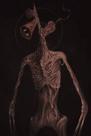

Siren Head looms in the shadows, a towering skeletal figure with rusted sirens replacing its head. Its haunting calls echo through forests, blending static, distorted voices, and eerie warnings that chill the soul. Travelers whisper of its presence, describing endless limbs stretching skyward, searching for prey. The creature thrives in silence until its sirens awaken, shaking the night with dreadful resonance. Legends say it stalks the lost, feeding on fear, leaving only echoes behind.